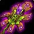
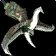

Torch of the Damned
Torch of the DamnedTorch of the Damned396 to 595 damage, speed 3.8, 51 strength, 45 stamina, 38 crit rating (1.72%), 50 haste ratingDrops from Reliquary of Souls, Black Temple
396 to 595 damage, speed 3.8, 51 strength, 45 stamina, 38 crit rating
(1.72%), 50 haste rating
Drops from Reliquary of Souls, Black Temple
What influencers say
Showing 2 of 3 captured remarks, widest reach first, with every view
represented
TheRealBlayst
TheRealBlayst · 8:30
26k views
Puts it on Retribution Paladin
Blayst calls it the ret paladin best in slot weapon until Sunwell, with
ideal slow speed, strength, crit and haste, and rates it above
Cataclysm's Edge because armour penetration is not a ret stat.
Jambrosay
Jambrosay · 12:31
2k views
Puts it on Retribution Paladin
Jambrosay says it comes out ahead of Cataclysm's Edge and the season
three sword, is made for ret paladins, and nobody else in the raid will
want it.
Showing all 4 spec cards.
No specs are selected, so no cards are showing. Use Show every spec to bring all of them back.
Retribution Paladin
StandingBIS
Constraints
Special-attack hit cap9%special
attacks
Precision-3%
Improved Faerie Fire-3%assumed
Gear needs3%
Entry set3.7%clear
by 0.7%
Tier set, no Tier 6 piece
worn3.7%clear by 0.7%
Lightbringer Gauntlets 56.46 EPV against Gloves of the Searing Grip
65.57, and no Retribution set bonus in either tier is a damage bonus;
this set holds no Tier 6 piece and keeps Gloves of the Searing Grip at
the hands.
White swings stop critting at 69.5%, measured at the special-attack hit
cap.
Nothing rostered reaches it this phase, so crit stays linear all tier.
No haste threshold to protect.
Delta
Torch of the
DamnedTorch of the
Damned396 to 595 damage, speed 3.8, 51
strength, 45 stamina, 38 crit rating (1.72%), 50 haste
ratingDrops from Reliquary of
Souls, Black Temple in
Retribution Paladin terms EPV 360.12
| Stat | Over second best, Hyjal Summit Cataclysm's EdgeCataclysm's Edge386 to 580 damage, speed 3.5, 75 strength, 49 stamina, 335 armor penetrationDrops from Archimonde, Mount Hyjal EPV 355.86 | Over Season 3 arena, Season 3 Vengeful Gladiator's BonegrinderVengeful Gladiator's Bonegrinder386 to 580 damage, speed 3.6, 46 strength, 62 stamina, 15 hit rating (0.95%), 46 crit rating (2.08%), 98 armor penetration, 33 resilience EPV 341.63 | Over third best, Blacksmithing Lionheart ExecutionerLionheart Executioner365 to 549 damage, speed 3.6, 52 strength, 44 agilityFear Resistance 8. The item database records the effect but not what it does, so it must be read on Wowhead · Proc, 1 per minute. Lionheart: 100 strength for 10 secCrafted, Blacksmithing EPV 340.01 | Over carried into the tier, Blacksmithing Lionheart ExecutionerLionheart Executioner365 to 549 damage, speed 3.6, 52 strength, 44 agilityFear Resistance 8. The item database records the effect but not what it does, so it must be read on Wowhead · Proc, 1 per minute. Lionheart: 100 strength for 10 secCrafted, Blacksmithing EPV 340.01 | Over fourth best, Tempest Keep Twinblade of the PhoenixTwinblade of the Phoenix375 to 564 damage, speed 3.6, 53 stamina, 110 attack power, 108 ranged attack power, 37 crit rating (1.68%)Sockets red, yellow, blue · Socket bonus 8 attack power, 8 ranged attack powerDrops from Kael'thas Sunstrider, Tempest Keep EPV 338.74 | Over best weapon, Black Temple Soul CleaverSoul Cleaver386 to 579 damage, speed 3.7, 65 strength, 63 stamina, 315 armor penetrationDrops from Teron Gorefiend, Black Temple EPV 331.81 | Over Season 2 arena, Season 2 Merciless Gladiator's BonegrinderMerciless Gladiator's Bonegrinder365 to 549 damage, speed 3.6, 42 strength, 55 stamina, 18 hit rating (1.14%), 42 crit rating (1.90%), 33 resilience EPV 315.42 | |||||||
|---|---|---|---|---|---|---|---|---|---|---|---|---|---|---|
| Change | Converted | Change | Converted | Change | Converted | Change | Converted | Change | Converted | Change | Converted | Change | Converted | |
| strength | -24 | -48 attack power | +5 | +10 attack power | -1 | -2 attack power | -1 | -2 attack power | +51 | +102 attack power | -14 | -28 attack power | +9 | +18 attack power |
| agility | 0 | 0 | -44 | 0 attack power · -1.76% melee crit | -44 | 0 attack power · -1.76% melee crit | 0 | 0 | 0 | |||||
| stamina | -4 | -17 | +45 | +45 | -8 | -18 | -10 | |||||||
| attack power | 0 | 0 | 0 | 0 | -110 | 0 | 0 | |||||||
| ranged attack power | 0 | 0 | 0 | 0 | -108 | 0 | 0 | |||||||
| hit | 0 | -15 | -0.95% | 0 | 0 | 0 | 0 | -18 | -1.14% | |||||
| crit | +38 | +1.72% | -8 | -0.36% | +38 | +1.72% | +38 | +1.72% | +1 | +0.05% | +38 | +1.72% | -4 | -0.18% |
| haste rating | +50 | +50 haste rating | +50 | +50 haste rating | +50 | +50 haste rating | +50 | +50 haste rating | +50 | +50 haste rating | +50 | +50 haste rating | +50 | +50 haste rating |
| armor penetration | -335 | -335 armor penetration | -98 | -98 armor penetration | 0 | 0 | 0 | -315 | -315 armor penetration | 0 | ||||
| resilience | 0 | -33 | -33 resilience | 0 | 0 | 0 | 0 | -33 | -33 resilience | |||||
| Stat Highlights (Total Change) | -48 attack power +1.72% melee crit +50 haste rating -335 armor penetration | +10 attack power -0.95% melee and ranged hit -0.36% melee crit +50 haste rating -98 armor penetration | -2 attack power -0.04% melee crit +50 haste rating | -2 attack power -0.04% melee crit +50 haste rating | -8 attack power -108 ranged attack power +0.05% melee crit +50 haste rating | -28 attack power +1.72% melee crit +50 haste rating -315 armor penetration | +18 attack power -1.14% melee and ranged hit -0.18% melee crit +50 haste rating | |||||||
Arms Warrior
StandingUpgrade
Constraints
Special-attack hit cap9%special
attacks
Improved Faerie Fire-3%assumed
Gear needs6%
The Precision talent sits in the Fury tree, which this build does not
reach.
Entry set5.1%short
by 0.8%
Tier set, Tier 6 head and shoulder and
chest and hands3.9%short by 2.1%
Closed by 4 hit gems against 8 sockets in the set.
Onslaught Gauntlets 87.78 EPV against Grips of Silent Justice 101.88
from Shade of Akama, and the entry set holds two Tier 5 pieces, at the
head and the chest, so the head token costs the Destroyer two-piece and
not the four-piece; this set holds four Tier 6 pieces, at the head, the
shoulder, the chest and the hands.
White swings stop critting at 69.5%, measured at the special-attack hit
cap.
Nothing rostered reaches it this phase, so crit stays linear all tier.
No haste threshold to protect.
Delta
Torch of the
DamnedTorch of the
Damned396 to 595 damage, speed 3.8, 51
strength, 45 stamina, 38 crit rating (1.72%), 50 haste
ratingDrops from Reliquary of
Souls, Black Temple in
Arms Warrior terms EPV
1286.56
| Stat | Over best weapon, Hyjal Summit Cataclysm's EdgeCataclysm's Edge386 to 580 damage, speed 3.5, 75 strength, 49 stamina, 335 armor penetrationDrops from Archimonde, Mount Hyjal EPV 1377.64 | Over Season 3 arena, Season 3 Vengeful Gladiator's BonegrinderVengeful Gladiator's Bonegrinder386 to 580 damage, speed 3.6, 46 strength, 62 stamina, 15 hit rating (0.95%), 46 crit rating (2.08%), 98 armor penetration, 33 resilience EPV 1324.06 | Over second best, Black Temple Soul CleaverSoul Cleaver386 to 579 damage, speed 3.7, 65 strength, 63 stamina, 315 armor penetrationDrops from Teron Gorefiend, Black Temple EPV 1295.62 | Over third best, Tempest Keep Twinblade of the PhoenixTwinblade of the Phoenix375 to 564 damage, speed 3.6, 53 stamina, 110 attack power, 108 ranged attack power, 37 crit rating (1.68%)Sockets red, yellow, blue · Socket bonus 8 attack power, 8 ranged attack powerDrops from Kael'thas Sunstrider, Tempest Keep EPV 1287.64 | Over carried into the tier, Tempest Keep Twinblade of the PhoenixTwinblade of the Phoenix375 to 564 damage, speed 3.6, 53 stamina, 110 attack power, 108 ranged attack power, 37 crit rating (1.68%)Sockets red, yellow, blue · Socket bonus 8 attack power, 8 ranged attack powerDrops from Kael'thas Sunstrider, Tempest Keep EPV 1287.64 | Over fourth best, Black Temple Halberd of DesolationHalberd of Desolation365 to 548 damage, speed 3.5, 51 agility, 57 stamina, 100 attack power, 30 hit rating (1.90%)Drops from High Warlord Naj'entus, Black Temple EPV 1273.98 | Over Season 2 arena, Season 2 Merciless Gladiator's BonegrinderMerciless Gladiator's Bonegrinder365 to 549 damage, speed 3.6, 42 strength, 55 stamina, 18 hit rating (1.14%), 42 crit rating (1.90%), 33 resilience EPV 1234.98 | |||||||
|---|---|---|---|---|---|---|---|---|---|---|---|---|---|---|
| Change | Converted | Change | Converted | Change | Converted | Change | Converted | Change | Converted | Change | Converted | Change | Converted | |
| strength | -24 | -48 attack power | +5 | +10 attack power | -14 | -28 attack power | +51 | +102 attack power | +51 | +102 attack power | +51 | +102 attack power | +9 | +18 attack power |
| agility | 0 | 0 | 0 | 0 | 0 | -51 | 0 attack power · -1.55% melee crit | 0 | ||||||
| stamina | -4 | -17 | -18 | -8 | -8 | -12 | -10 | |||||||
| attack power | 0 | 0 | 0 | -110 | -110 | -100 | 0 | |||||||
| ranged attack power | 0 | 0 | 0 | -108 | -108 | 0 | 0 | |||||||
| hit | 0 | -15 | -0.95% | 0 | 0 | 0 | -30 | -1.90% | -18 | -1.14% | ||||
| crit | +38 | +1.72% | -8 | -0.36% | +38 | +1.72% | +1 | +0.05% | +1 | +0.05% | +38 | +1.72% | -4 | -0.18% |
| haste rating | +50 | +50 haste rating | +50 | +50 haste rating | +50 | +50 haste rating | +50 | +50 haste rating | +50 | +50 haste rating | +50 | +50 haste rating | +50 | +50 haste rating |
| armor penetration | -335 | -335 armor penetration | -98 | -98 armor penetration | -315 | -315 armor penetration | 0 | 0 | 0 | 0 | ||||
| resilience | 0 | -33 | -33 resilience | 0 | 0 | 0 | 0 | -33 | -33 resilience | |||||
| Stat Highlights (Total Change) | -48 attack power +1.72% melee crit +50 haste rating -335 armor penetration | +10 attack power -0.95% melee and ranged hit -0.36% melee crit +50 haste rating -98 armor penetration | -28 attack power +1.72% melee crit +50 haste rating -315 armor penetration | -8 attack power -108 ranged attack power +0.05% melee crit +50 haste rating | -8 attack power -108 ranged attack power +0.05% melee crit +50 haste rating | +2 attack power +0.18% melee crit -1.90% melee and ranged hit +50 haste rating | +18 attack power -1.14% melee and ranged hit -0.18% melee crit +50 haste rating | |||||||
Feral Cat
StandingUpgrade
Constraints
Special-attack hit cap9%special
attacks
Improved Faerie Fire-3%assumed
Gear needs6%
No hit talent exists for this spec.
Entry set10.8%clear
by 4.9%
Tier set, Tier 6 shoulder and
legs10.8%clear by 4.8%
The head slot is Wolfshead Helm and the hands slot is Gloves of the
Searing Grip, and neither is a tier piece, so this set takes neither the
head token nor the hands token; it holds two Tier 6 pieces, at the
shoulder and the legs.
White swings stop critting at 69.5%, measured at the special-attack hit
cap.
Nothing rostered reaches it this phase, so crit stays linear all tier.
No haste threshold to protect.
Delta
Torch of the
DamnedTorch of the
Damned396 to 595 damage, speed 3.8, 51
strength, 45 stamina, 38 crit rating (1.72%), 50 haste
ratingDrops from Reliquary of
Souls, Black Temple in
Feral Cat terms EPV
708.99
| Stat | Over Season 3
arena, Season 3
 Vengeful Gladiator's StaffVengeful Gladiator's Staff91 to 198 damage, speed 2.0, 46 strength, 62 stamina, 1110 feral attack power, 22 hit rating (1.40%), 46 crit rating (2.08%), 33 resilience EPV 1634.04 |
Over Season 2 arena, Season 2 Merciless Gladiator's MaulMerciless Gladiator's Maul90 to 192 damage, speed 2.0, 42 strength, 55 stamina, 1010 feral attack power, 18 hit rating (1.14%), 42 crit rating (1.90%), 33 resilience EPV 1497.69 | Over carried into the tier, Season 2 Merciless Gladiator's MaulMerciless Gladiator's Maul90 to 192 damage, speed 2.0, 42 strength, 55 stamina, 1010 feral attack power, 18 hit rating (1.14%), 42 crit rating (1.90%), 33 resilience EPV 1497.69 | Over best weapon, Hyjal Summit Pillar of FerocityPillar of Ferocity136 to 293 damage, speed 3.0, 550 armor, 47 strength, 96 stamina, 1059 feral attack powerDrops from Anetheron, Mount Hyjal EPV 1404.22 | Over second best, Karazhan
 Terestian's StranglestaffTerestian's Stranglestaff133 to 270 damage, speed 3.0, 38 strength, 37 agility, 48 stamina, 829 feral attack power, 25 hit rating (1.59%)Drops from Terestian Illhoof, Karazhan EPV 1349.30 |
Over third best, Serpentshrine Cavern Wildfury GreatstaffWildfury Greatstaff135 to 287 damage, speed 3.0, 500 armor, 75 stamina, 992 feral attack power, 54 dodge ratingDrops from Trash / zone drop, Serpentshrine Cavern EPV 1226.38 | Over fourth best, Botanica Feral Staff of LashingFeral Staff of Lashing148 to 279 damage, speed 3.0, 300 armor, 36 strength, 35 agility, 34 stamina, 754 feral attack power EPV 1195.12 | |||||||
|---|---|---|---|---|---|---|---|---|---|---|---|---|---|---|
| Change | Converted | Change | Converted | Change | Converted | Change | Converted | Change | Converted | Change | Converted | Change | Converted | |
| armor | 0 | 0 | 0 | -550 | 0 | -500 | -300 | |||||||
| strength | +5 | +10 attack power | +9 | +18 attack power | +9 | +18 attack power | +4 | +8 attack power | +13 | +26 attack power | +51 | +102 attack power | +15 | +30 attack power |
| agility | 0 | 0 | 0 | 0 | -37 | -37 attack power · -1.48% melee crit | 0 | -35 | -35 attack power · -1.40% melee crit | |||||
| stamina | -17 | -10 | -10 | -51 | -3 | -30 | +11 | |||||||
| feral attack power | -1110 | -1010 | -1010 | -1059 | -829 | -992 | -754 | |||||||
| hit | -22 | -1.40% | -18 | -1.14% | -18 | -1.14% | 0 | -25 | -1.59% | 0 | 0 | |||
| crit | -8 | -0.36% | -4 | -0.18% | -4 | -0.18% | +38 | +1.72% | +38 | +1.72% | +38 | +1.72% | +38 | +1.72% |
| haste rating | +50 | +50 haste rating | +50 | +50 haste rating | +50 | +50 haste rating | +50 | +50 haste rating | +50 | +50 haste rating | +50 | +50 haste rating | +50 | +50 haste rating |
| dodge rating | 0 | 0 | 0 | 0 | 0 | -54 | 0 | |||||||
| resilience | -33 | -33 resilience | -33 | -33 resilience | -33 | -33 resilience | 0 | 0 | 0 | 0 | ||||
| Stat Highlights (Total Change) | +10 attack power -1110 feral attack power -1.40% melee and ranged hit -0.36% melee crit +50 haste rating | +18 attack power -1010 feral attack power -1.14% melee and ranged hit -0.18% melee crit +50 haste rating | +18 attack power -1010 feral attack power -1.14% melee and ranged hit -0.18% melee crit +50 haste rating | +8 attack power -1059 feral attack power +1.72% melee crit +50 haste rating | -11 attack power +0.24% melee crit -829 feral attack power -1.59% melee and ranged hit +50 haste rating | +102 attack power -992 feral attack power +1.72% melee crit +50 haste rating | -5 attack power +0.32% melee crit -754 feral attack power +50 haste rating | |||||||
Feral Bear
StandingUpgrade
Constraints
Special-attack hit cap9%threat
floor
Improved Faerie Fire-3%assumed
Gear needs6%
No hit talent exists for this spec.
Entry set3.2%short
by 2.8%
Tier set, Tier 6 head and shoulder and
chest and hands and legs3.7%short
by 2.2%
Closed by 4 hit gems against 5 sockets in the set.
A druid has five tier slots, so the Nordrassil four-piece and the
Thunderheart two-piece need six between them and cannot both be worn;
this set wears five pieces of Thunderheart Harness, which leaves it no
Nordrassil piece.
The constraint that decides this spec's gear is crit immunity, which it
reaches at 415 defense skill, or 154 defense rating from gear.
Survival of the Fittest supplies 3% of that reduction, which is why this
spec's figure is lower than a plate tank's.
This spec cannot hold all four avoidance entries, so it cannot
sustainably push crushing blows off the attack table.
White swings stop critting at 69.5%, measured at the special-attack hit
cap.
Nothing rostered reaches it this phase, so crit stays linear all tier.
No haste threshold to protect.
Delta
Torch of the
DamnedTorch of the
Damned396 to 595 damage, speed 3.8, 51
strength, 45 stamina, 38 crit rating (1.72%), 50 haste
ratingDrops from Reliquary of
Souls, Black Temple in
Feral Bear terms EPV
1256.53
| Stat | Over Season 3 arena, Season 3 Vengeful Gladiator's StaffVengeful Gladiator's Staff91 to 198 damage, speed 2.0, 46 strength, 62 stamina, 1110 feral attack power, 22 hit rating (1.40%), 46 crit rating (2.08%), 33 resilience EPV 2023.12 | Over best weapon, Hyjal Summit Pillar of FerocityPillar of Ferocity136 to 293 damage, speed 3.0, 550 armor, 47 strength, 96 stamina, 1059 feral attack powerDrops from Anetheron, Mount Hyjal EPV 1968.21 | Over Season 2 arena, Season 2 Merciless Gladiator's MaulMerciless Gladiator's Maul90 to 192 damage, speed 2.0, 42 strength, 55 stamina, 1010 feral attack power, 18 hit rating (1.14%), 42 crit rating (1.90%), 33 resilience EPV 1864.17 | Over second best, Serpentshrine Cavern Wildfury GreatstaffWildfury Greatstaff135 to 287 damage, speed 3.0, 500 armor, 75 stamina, 992 feral attack power, 54 dodge ratingDrops from Trash / zone drop, Serpentshrine Cavern EPV 1781.34 | Over carried into the tier, Serpentshrine Cavern Wildfury GreatstaffWildfury Greatstaff135 to 287 damage, speed 3.0, 500 armor, 75 stamina, 992 feral attack power, 54 dodge ratingDrops from Trash / zone drop, Serpentshrine Cavern EPV 1781.34 | Over third best, Karazhan Terestian's StranglestaffTerestian's Stranglestaff133 to 270 damage, speed 3.0, 38 strength, 37 agility, 48 stamina, 829 feral attack power, 25 hit rating (1.59%)Drops from Terestian Illhoof, Karazhan EPV 1712.85 | Over fourth best, Botanica Feral Staff of LashingFeral Staff of Lashing148 to 279 damage, speed 3.0, 300 armor, 36 strength, 35 agility, 34 stamina, 754 feral attack power EPV 1562.02 | |||||||
|---|---|---|---|---|---|---|---|---|---|---|---|---|---|---|
| Change | Converted | Change | Converted | Change | Converted | Change | Converted | Change | Converted | Change | Converted | Change | Converted | |
| armor | 0 | -550 | 0 | -500 | -500 | 0 | -300 | |||||||
| strength | +5 | +10 attack power | +4 | +8 attack power | +9 | +18 attack power | +51 | +102 attack power | +51 | +102 attack power | +13 | +26 attack power | +15 | +30 attack power |
| agility | 0 | 0 | 0 | 0 | 0 | -37 | 0 attack power · -1.48% melee crit | -35 | 0 attack power · -1.40% melee crit | |||||
| stamina | -17 | -170 health | -51 | -510 health | -10 | -100 health | -30 | -300 health | -30 | -300 health | -3 | -30 health | +11 | +110 health |
| feral attack power | -1110 | -1059 | -1010 | -992 | -992 | -829 | -754 | |||||||
| hit | -22 | -1.40% | 0 | -18 | -1.14% | 0 | 0 | -25 | -1.59% | 0 | ||||
| crit | -8 | -0.36% | +38 | +1.72% | -4 | -0.18% | +38 | +1.72% | +38 | +1.72% | +38 | +1.72% | +38 | +1.72% |
| haste rating | +50 | +50 haste rating | +50 | +50 haste rating | +50 | +50 haste rating | +50 | +50 haste rating | +50 | +50 haste rating | +50 | +50 haste rating | +50 | +50 haste rating |
| dodge rating | 0 | 0 | 0 | -54 | -2.85% dodge | -54 | -2.85% dodge | 0 | 0 | |||||
| resilience | -33 | -33 resilience · -0.84% crit taken | 0 | -33 | -33 resilience · -0.84% crit taken | 0 | 0 | 0 | 0 | |||||
| Stat Highlights (Total Change) | -170 health -0.84% crit taken | -510 health | -100 health -0.84% crit taken | -300 health -2.85% dodge | -300 health -2.85% dodge | -30 health | +110 health | |||||||
Rates
2
attack power per strength·10
health per stamina, before talents and Blessing of Kings·15.77
rating per 1% melee and ranged hit·22.08
rating per 1% melee crit·haste
rating counted as itself·resilience
counted as itself·39.4231
rating per 1% crit taken·18.923079
rating per 1% dodge·no
melee attack power from agility in Bear Form·25
agility per 1% crit